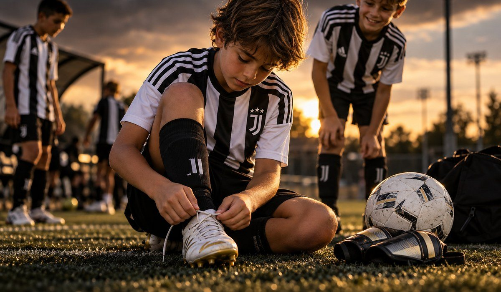

|
Hola Maria, Antes de terminar la inscripción, muchas familias nos hacen las mismas preguntas. Aquí van las respuestas. ¿Tiene que jugar en un club? No. El ID Camp es para jugadores de todos los niveles que tengan ganas de entrenar y ser evaluados por los entrenadores de Juventus Academy. ¿Para qué edades es? Para niños y niñas de 6 a 16 años, jugadores y porteros. Se entrena en grupos por edad. ¿Cuántos jugadores hay por grupo? Se entrena en grupos por edad y los entrenadores corrigen a cada jugador de cerca. ¿Qué debe llevar? Tacos, espinilleras, su botella de agua y snacks saludables. ¿Qué pasa si se destaca? Queda anotado para futuras oportunidades de Juventus Academy, como entrenar todo el año en una sede de la Academy o la Juventus Training Experience en Italia. ¿Cuándo y dónde es? Estos son los datos de los dos camps: Mayagüez
📅 Miércoles 16 y jueves 17 de diciembre · 5 a 8:30 PM
📍 Estadio Centroamericano, 25 Blvr. Guanajibo, Mayagüez
Bayamón
📅 Lunes 21 y martes 22 de diciembre · 5 a 8:30 PM
📍 Bayamón Soccer Complex 1, Calle Quintana, Bayamón
⚽ Niños y niñas de 6 a 16 años, jugadores y porteros |

|